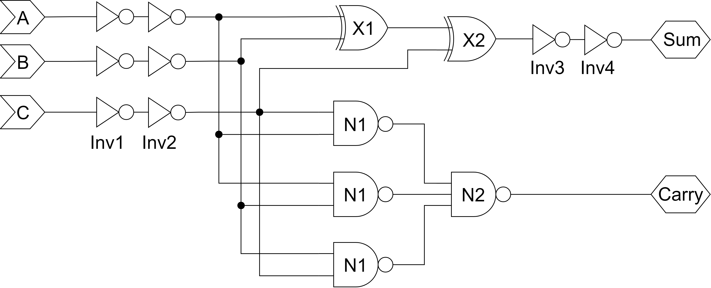
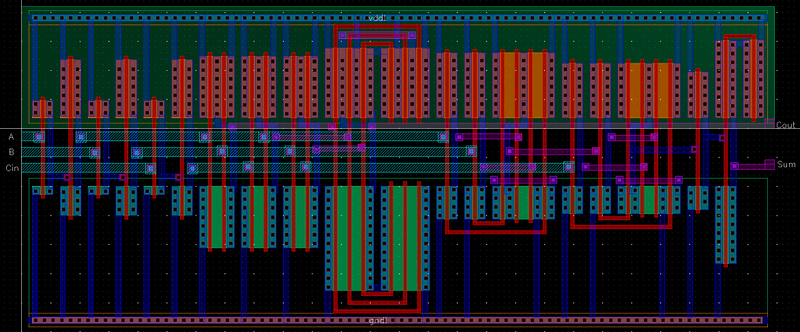
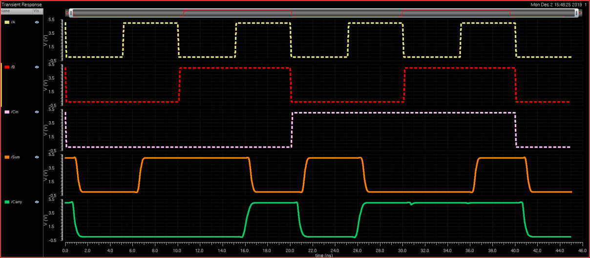

The Full Adder
A CMOS Full Adder Designed with Speed in Mind
The Objective
The goal of this project was to design a full adder layout and optimize it for speed. The linear delay model
(based on logical effort calculations) was used to determine the optimal architecture and optimal logic gate sizes.
After simulating, it was found that the design had a smaller propagation delay than the calculations predicted.

Constraints
- Full Adder must present an input capacitance equal to 3 times that of a unit transistor (referred to as 3C of capacitance)
- Full Adder will be used to drive 90C of capacitance at its load
- Layout must use the AMI C5N process with a feature size of 600 nm
- Optimize the circuit for speed
- Design and gate sizes must be based on linear delay model calculations
The Final Layout
The final designed measured in at 129.6 μm by 55.2 μm (432λ by 184λ)
Calculated Results
- Input A to Carry propagation delay: 878 ps
- Input A to Sum propagation delay: 1.369 ns
Simulation Results
- Input A to Carry propagation delay: 835 ps
- Input A to Sum propagation delay: 1.277 ns

{kind=link}